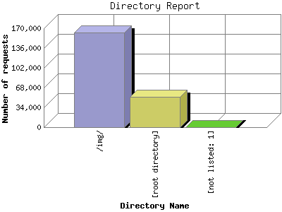

The Directory Report analyzes accesses to this web site's directories. This information can be useful in determining the most requested areas.
This report shows results with at least 0.010000 percent of the total bytes. This report is sorted by amount of bytes transferred.

| Directory Name | Number of requests | Percentage of the bytes | |
|---|---|---|---|
| 1. | /img/ | 163,220 | 95.39% |
| 2. | [root directory] | 52,099 | 4.61% |
| [not listed: 1] | 6 | 0.00% | |
This report was generated on January 29, 2013 04:51.
Report time frame September 20, 2011 14:50 to January 27, 2013 13:05.
| Web statistics report produced by: analog 5.1 / Report Magic 2.21 |